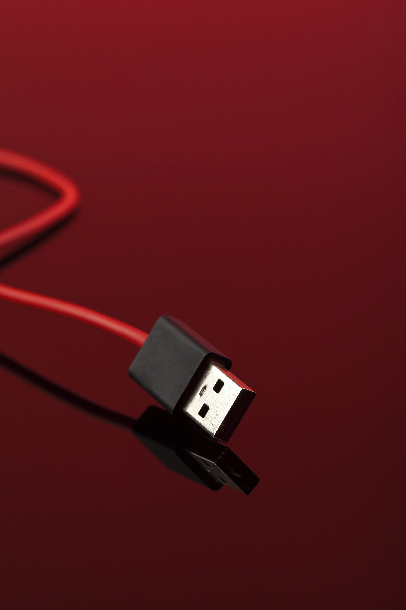

Accesorios
Modern batteries have really innovative features that favor the prolonged performance of a fast
charge and wireless connection that cannot be missing in a cutting-edge smart cell phone on a
daily basis.
This technology makes it possible for users to maintain 100% .
Contact

Laptop
A portable computer or laptop is a personal computer that can be easily transported. Many of them
are designed to support software and files just as robust as those processed by a desktop
computer.
today's technology has advanced greatly through it
Contact

keyboard
Hp garming Keyboard with RGB Lighting
Completely visible in the dark, illuminates each of his letters
Giving an elegant touch, eye-catching and with a maximum utility
Convenient tilt for maximum typing comfort
Fully compatible with all operating systems
Contact

Accessories
The MSI Optix G241VC monitor has at least 20% more color gamut coverage compared to regular
monitors, providing much more detail in images And Free Sync technology, which has been
incorporated into the monitor, synchronizes
contact

Audio Speaker
Power PMPO: 1000
Sensitivity (dB): 90
Sound type: Mono
Frequency response (Hz): 0Hz-20kHz
Features: Battery/LED Lights/Display
Cable length: 1.5m
Battery capacity: 3,000mAh
Charging time: 9h
Discharge time: 7h at
Contact
Headset
PRODUCT FEATURES.
-Micro SD input
-FM radio
-Powerful sound
-Compatible with 5.0 version
-Range in connection 10M
-USB charging cable (INCLUDED)
-3.5MM PLUG CONNECTION (NOT INCLUDED)
-Hands free
-Rechargeable
.
Contact